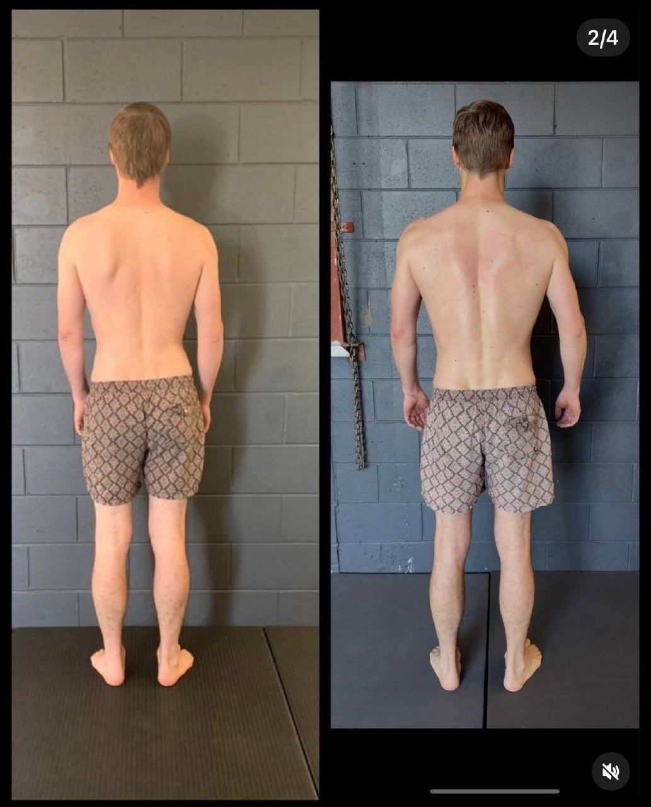

You've done the foam rolling.
You've held stretches for 30–60 seconds.
You've even been told to "just stretch more."
Yet your:
Hamstrings still feel tight
Shoulders still pull forward
Back still aches by the end of the day
At some point, you have to ask the obvious question:
If stretching works… why hasn't it worked for you?
What people think tightness is (and why that's wrong)
Most people assume:
"Tight muscle = short muscle → stretch it → problem solved"
That's a simple story. It's also incomplete.
"Tightness" is rarely just a muscle length problem. It's usually a coordination and force distribution problem across the entire body.
Your body creates tension when:
Forces aren't being distributed properly
Certain areas are overloaded
Other areas aren't doing their job
So what you feel as "tightness" is often your body trying to stabilise a dysfunctional pattern.
Why stretching doesn't create lasting change
Stretching can give temporary relief. That part is real.
But it doesn't fix the underlying issue.
Here's why:
1. You're lengthening something that's already overworked
That "tight" hamstring or upper trap? It's often working overtime to compensate for something else not doing its job.
Stretching it = removing support from an already overloaded system.
Result:
Temporary relief
Then it tightens again (often worse)
2. You're not changing how you move
Your body returns to the same:
Sitting posture
Walking pattern
Training habits
So even if you loosen something temporarily, you immediately re-create the same tension pattern.
3. You're increasing instability
If your body is using tension to stabilise you, and you remove that tension without replacing it with better coordination…
You get:
More instability
More compensation
More tightness later
Why stretching can actually make things worse
This is where most people get it wrong.
In some cases, stretching isn't neutral — it's counterproductive.
Example: Hamstrings
Many people stretch their hamstrings daily.
But often:
Pelvis is poorly positioned
Glutes aren't doing their job
Hamstrings are acting as stabilisers
So when you stretch them:
You reduce their ability to stabilise
Your body feels less supported
It responds by tightening more
You've just reinforced the cycle you're trying to fix.

Example: Shoulders & chest
Stretching the chest feels good short-term.
But if:
Ribcage is flared
Thoracic spine isn't rotating properly
Scapula isn't positioned well
Then stretching:
Doesn't fix positioning
Doesn't fix movement
Just temporarily changes sensation
The real problem: your body isn't organised properly
Instead of asking:
"What should I stretch?"
The better question is:
"Why is my body creating tension here in the first place?"
In most cases, it comes down to:
Poor ribcage–pelvis relationship
Lack of rotational control
Inefficient gait mechanics
Imbalanced force distribution
Your body isn't tight.
It's disorganised.
What actually works (and lasts)
If you want long-term change, you need to shift from:
Isolated stretching → to → Integrated movement retraining
That means:
1. Reorganising how your body holds itself
Not just standing "taller," but actually:
Aligning ribcage and pelvis
Managing pressure through the body
2. Teaching the right muscles to do their job
Instead of stretching what feels tight, you:
Activate what's underperforming
Reduce overload elsewhere
3. Integrating it into movement
This is where most approaches fail.
If it doesn't transfer into:
Walking
Running
Daily movement
…it won't stick.
Why this matters for chronic pain
This is exactly why people:
Stretch for years
See physios, chiros, massage therapists
Get temporary relief
…but never actually resolve the issue.
Because the system hasn't changed.
The Functional Patterns approach
At Functional Patterns Brisbane, we don't chase symptoms.
We assess:
Your posture
Your gait (how you walk)
How your body distributes force
Then we:
Rebuild coordination
Improve rotational mechanics
Restore proper tension where it should exist
The goal isn't to feel "looser."
It's to move better so your body doesn't need to create unnecessary tension in the first place.

Who this is for
This approach is especially relevant if:
You feel constantly tight despite stretching
You've had recurring injuries or pain
You feel "out of alignment"
You've tried everything but nothing sticks
The bottom line
Stretching isn't useless.
But as a long-term solution on its own? It's incomplete—and often misapplied.
If you don't change how your body:
Organises itself
Produces force
Moves through space
…you'll keep chasing temporary relief.
Want to actually fix the problem?
If you're in Brisbane and want to understand why your body feels tight (and what to do about it):
Book an Initial Consultation at Functional Patterns Brisbane.
We'll assess your movement, show you what's actually going on, and map out a plan to fix it.